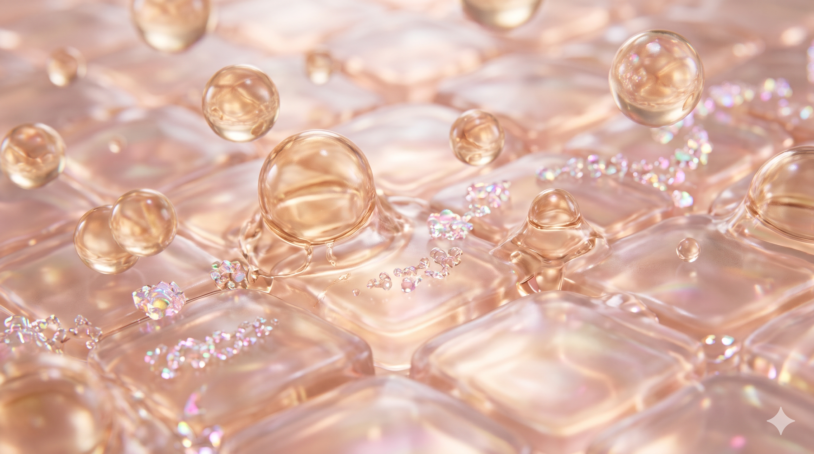

Notification message
Skinmimic Care is founded on a singular biological truth: your skin should never have to fight your skincare. By replicating your exact cellular lipid matrix—ceramides, cholesterol, and biomimetic peptides—our formulas dissolve seamlessly into your skin barrier like matching puzzle pieces.
1 : 1
Bio-Identical Ratio
Mirrors natural stratum corneum
0%
Foreign Silicones
Zero pore-suffocating film
4 Minds
Partnership
Lab, clinic, supply & vision

Active lipids and peptide micro-spheres fusing directly with keratinocyte bilayers without triggering inflammatory response.
Synthetic lotions sit atop your skin like grease on glass. Skinmimic matches the exact crystalline lipid composition of your skin's inter-cellular cement. Hover or touch anywhere on the matrix below to release and assimilate bio-identical molecules.
Human skin cells (corneocytes) sit like bricks surrounded by lipid mortar. When skincare provides random synthetic oils, the mortar rejects them, leading to dryness underneath an oily shine. Skinmimic Care aligns with the exact molecular spacing of human bilayers.
Because our compounds are chemically indistinguishable from endogenous sebum and ceramides, your skin's cellular receptors immediately open lipid gateways, absorbing hydration deep into the stratum spinosum without barrier resistance.
Biomimicry in skincare is not a marketing buzzword—it is a physiological reality. Human skin is an intricate biological shield. When skincare introduces foreign, harsh molecules, your skin spends energy defending itself. When you apply Skinmimic, your cells recognize it instantly.
Your skin’s intercellular cement is composed of a precise ratio of Ceramides, Cholesterol, and Free Fatty Acids. Skinmimic recreates this exact lipid architecture so it assimilates instantly without triggering micro-inflammation.
Natural Moisturizing Factor (NMF) consists of amino acids, urea, and sodium PCA that bind water deep inside corneocytes. Skinmimic delivers these bio-identical moisture reservoirs, preventing Trans-Epidermal Water Loss (TEWL) from within.
Most formulas rely on harsh penetration enhancers that punch holes in the skin barrier. Skinmimic utilizes physiological transport: our lipids blend seamlessly into your cellular membranes like matching puzzle pieces.
"When skincare mimics human biology, healing is no longer an uphill battle."
Skinmimic Scientific Advisory Council
We rejected the conventional cycle of stripping the skin raw only to sell a band-aid moisturizer. Here is how our biomimetic philosophy fundamentally rewrites daily skincare.
The story of Skinmimic Care began not in a corporate boardroom, but inside clinical treatment rooms where skin was crying for help.
Across clinics, salons, and consultation chairs, we watched a heartbreaking pattern: clients were using 10-step routines, heavy peeling solutions, and synthetic concentrates. Yet their faces were red, burning, sensitized, and constantly dehydrated. Their natural skin barriers were completely wiped out.
One evening, four friends and professionals gathered: a formulation chemist, a master aesthetician, a bio-sourcing expert, and a wellness strategist. We asked ourselves one fundamental question:
"Why are we always trying to fight or force the skin, instead of simply giving it back what it is made of?"
We united our expertise to create a brand that abandons the synthetic arms race. We spent years researching lipid ratios, cellular compatibility, and non-irritating plant-derived ceramides. Our mission became singular: to formulate skincare that mimics your own living tissue. No shortcuts, no aggressive disruptions—just pure epidermal symbiosis.
Skinmimic Care was built on the intersection of cosmetic chemistry, clinical aesthetic practice, sustainable sourcing, and strategic skin wellness.
Molecular Lipid Synthesis
Leading the laboratory research into identical lipid fractions. Specializes in mimicking human sebum, squalene profiles, and non-disruptive vesicular delivery systems.
"Your cells already know what to do; we simply give them the exact building blocks."
Hands-On Dermal Therapy
Brings over a decade of firsthand clinical salon experience treating severe barrier impairment, post-laser sensitivity, and irritated complexion conditions.
"I saw hundreds of compromised faces every year. Skinmimic is the sanctuary their skin needed."
Consumer Skin Education
Transforms dense biochemical science into clear, transparent education. Dedicated to liberating customers from deceptive marketing and trend-chasing.
"True luxury is not gold packaging. It is knowing every ingredient honors your biology."
Ethical Actives & Quality Control
Secures ultra-pure, cold-extracted plant bio-lipids and biocompatible amino complexes. Guarantees stringent stability, batch consistency, and ethical purity.
"We never compromise on purity. If a compound isn't biocompatible, it never enters our lab."
Our Unified Promise
"Four distinct disciplines. One shared belief: skincare should never fight the skin."
Answer 3 quick questions about how your skin feels on a daily basis to see if your natural lipid matrix is compromised.
1. After washing your face with water, how does your skin feel within 5 minutes?
2. When you apply regular moisturizers or serums, do you experience slight stinging or redness?
3. Do you struggle with dullness or rough texture despite drinking plenty of water?
Every formula in development is bound by four non-negotiable scientific laws.
We will never include ingredients foreign to human biology simply to satisfy texture aesthetics. Every single component must possess an endogenous counterpart that the skin recognizes as its own.
No quick fix is worth barrier sacrifice. We deliberately avoid stripping acids or aggressive alcohol-based vehicles. Healing the stratum corneum is our non-negotiable priority.
More is not better in biology; correct ratio is everything. We align active concentrations with the natural molecular density of young, vibrant human epidermis.
No hidden fragrance masks, no parabens, no endocrine disrupting stabilizers. We believe consumers deserve uncompromised honesty regarding what interacts with their cellular structure.
Whether you are a dermatologist, aesthetic salon owner interested in biomimetic protocols, or an individual dealing with damaged skin—we welcome direct conversation.
✓ Available for clinical consultations & aesthetic partnerships.
✓ Direct contact with the founding team & formulation advisors.
Leave your details below and our team will get back to you promptly.